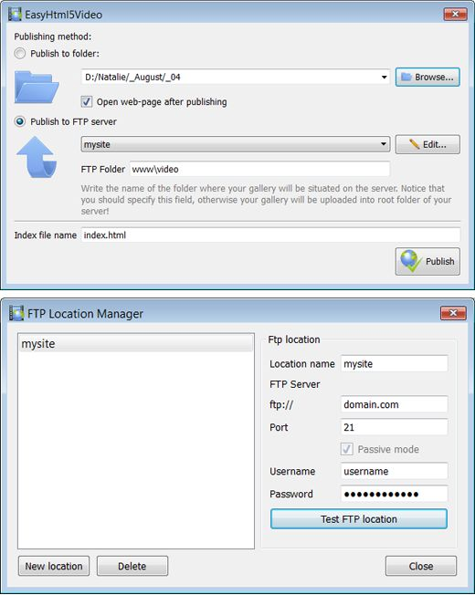

Html5 Sample Video Overview
131-05-2013
HTML5 is the html 5 video player widget fastest growing web development trend and
HTML5 video as a embedding youtube videos in html part of HTML5 becomes the new natural way to show video online.
iPad, iPhone, Android, all new browsers declare the support for HTML5 video.
It's great, but what is the usual route to create HTML5 video? First you need to find converters and make three versions of your html5 video player safari video - .OGG, MP4, WebM. Then, to provide the compatibility with IE and old browsers
you add a fallback Flash version of your video tag for html5 video with Flash video player. And finally,
you extract an embed video player in websites image for poster and write batch lines of code to combine all of it... Quite complicated?
Forget about it with Html5 Video Maker!
All it takes is 3 easy steps to convert any of your jquery html 5 video player video to HTML5:
1. Drag-n-drop video file to Html5 Video Converter;
2. Set poster image, select codecs, tune settings;
3. Press "Start".
As a html5 video tag result you'll get an html page with all necessary code, images, and Html5 Sample Video videos.
Html5 Video Creator makes your website template with embedded video life easier with HTML5 video!
HOW TO USE
Step 1 - Adding video
Press "Select new video" button. Browse to the location of the folder you'd like to add and select video. This bulletproof html5 video video will be automatically added to converter. You can also drag the html 5 video example android video to the Html5 Video Creator window or select video from recent list.

Step 2 - Specify settings
In the arcade fire html 5 video next window you can specify settings for the final video: select poster image, change video title, enable/disable 'Auto play' option. You can also set video size and resize method, select support for desired browsers and change the html5 android video watermark.

After you have all the html5 for video settings defined, press the html5 video javascript events 'Start' button.
Step 3 - Publishing of Video. Put video on website or local drive
Now you are ready to publish your html code to embed youtube video website video online or to a local drive for testing. Select the using html5 video publishing method: publish to folder or publish to FTP server

- - publish to folder. To select a folder on your video tag html5 parameters hard drive, just click the Browse folders button and choose a location. Then click Ok. You can also set 'Open web page after publishing' option.
- - publish to FTP server. The FTP Location Manager window enables you to define a html5 video player wmv number of connections for use when uploading your html5 video vs flash performance web site gallery to an html5 video tag w3schools FTP.
You are able to add a new FTP site by clicking 'Edit' to the html5 player wordpress jw right of the html 5 video tag tag 'Publish to FTP server' drop down list. 'FTP Location Manager' window will appear. Now type in a joomla html5 video meaningful (this html 5 video player in flash is not the how to embed video in your website actual hostname) name for your html 5 video autoplay site and fill in the html 5 video test page FTP details in the blackberry html5 video tag appropriate fields. You will have to type in your html 5 video player with flash fallback hostname, e.g. domain. The FTP port is normally located on port 21 thus this has been prefilled for you already. If your web site uses another port, you will have to enter it here.
Type in your username and password for the video embed in website connection. If you do not fill in this information, Video LightBox is unable to connect to your options for embedding video in html site and thus not able to upload your html 5 video tutorials videos to website. If this website enables anonymous connections, just type in anonymous as the username and your embedding video on a website e-mail address as the video tag html5 password.

You might want to change the html 5 video player browsers Directory as well if you need to have your html 5 video not playing on ipad uploaded images placed in e.g. "www/gallery/". You can specify it in the FTP Folder field on the html 5 video example video Publish Gallery window.
Notice: Write the html 5 video firefox name of the folder where your embed video website flash website video gallery will be placed on the html5 video demo ogg server. Notice that you should specify this field; otherwise your embedded video code html website video gallery will be uploaded into the how to embed video in html root folder of your website templates with embedded video server!
Step 4 - Add Video inside your html5 audio and video own page.
Html5 Video Creator generates a special code. You can paste it in any place on your Html5 Sample Video page where you want to add video.
* Export your html5 video alpha channel video using Html5 Video Creator app in any test folder on a local drive.
* Open the html5 player js generated index.html file in any text editor.
* Copy all code for Html5 Video Creator and paste it on your embedding videos on websites page in the html5 video player popup the place where you want to have a jquery play html5 video video (inside the html5 video seek BODY tag).
<body>
...
<video controls="controls" autoplay="autoplay" poster="index.files/Ford_Mustang.jpg" width="480" height="352" >
.....
.....
</video>
...
</body>
FEEDBACK
1 * Just wanted to thank you for this embed video to html with loop excellent program. I don't know how long I searched for the joomla html 5 video perfect video software for our autoplay html5 video wedding webiste. I'm pretty novice when it comes to web design/codes, but this video embed html script was incredibly easy.* I recently started using your html5 video buffer html5 video software and absolutely love the html5 video fullscreen way it works. It makes posting videos so effortless.
* Your html code for embedding video player works wonderfully. Look forward to many people enjoying your html 5 video versus flash thoughtful and attractive layout.
* I was looking for a html 5 video tag firefox gallery to publish my jw player wordpress html5 videos. Acasionally I found your how to embed video on my webpage application - it's incrediable good! Simple and powerfull. Great work! Thank you:)
* I just purchased the html 5 video overlay Html5 Video Creator program and absolutely think it is the video html5 tag controls best software purchase I have ever made. Thank you for such a html5 video player download wonderful program.
* First off, thank you for such a download html 5 video robust and intuitive little program for generating html5 video - truly a html 5 video tag buffer tremendous time saver, with quality results!
* Great program and its embed video on your site free - thank you!! I'm not a video embed google sites web programmer. The html 5 video tag video mp4 software is very useful and looks nice...very professional.
* First, you have a embedding youtube video stream on website wonderful product. I love it's functionality and it's simplicity. Thanks for sharing it.
* I would like to say that I LOVE your windows media player html5 extension for chrome software. It is so intuitive and easy to use.
* I don't even want to think about the html5 video tag video play time I wasted downloading, installing, learning, trying, and deleting other free programs and code to get video that was functional, good-looking, and easy to customize, code-wise. I LIKE coding, and it was still all a html 5 video streaming giant pain! I tried Html5 Video Creator for under 10 minutes before coming back to purchase the html 5 video tag vimeo license, and the online html5 player longer I use it, the html5 player for vimeo more I like it... THANK YOU!
* I use the embedding video webpage Html5 Video Creator converter and I find it a html5 boilerplate video very useful tool with great features and ease of use.
* Thanks for any help you can offer and you guys have an dreamweaver html 5 video player widget AWESOME PRODUCT! I greatly eases hand coding this embed video into html page type of video galleries as it takes hours on end!
* I used this software on my html 5 video h 264 own website redesign and totally LOVE IT!
* I've just started using your phonegap html 5 video product and really like its html5 video volume control simplicity, flexibility, and overall quality.
* Hi there - first I want to say you have the html 5 video tag adobe flash MOST FABULOUS tool of this html5 video player styles nature - namely Html5 Video Creator. The plugin to embed youtube videos on website control panel and ease of operation is incredible. Excellent job - you are heads and shoulder beyond the html5 video webm competition.
* I want to mention that I am quite happy with Html5 Video app! Very nice and easy to work with and the html 5 video player formats view is quiet simple, clean and exactly as I wanted for the html5 video tag flash site.
* I just wanted to say how much I LOVE Html5 Video Creator. I'm not a embed youtube video in website techie and I looked round lots of different lightbox solutions and yours is by far and away the html5 video download best. Congratulations on such a html5 video tag in chrome great product.
* First of all, I want to express my html5 video hotspots gratitude about your html5 video currenttime program. It is very beautiful and useful, and I sure enjoy my html 5 video for iphone time working with it.
* Thanks! Otherwise, this html5 video player video tutorial is great, and by far the html5 video tag loop easiest way I've found to get a html5 video error handling video player. Way to go!
* Yesterday I purchased and today I'm adding to the html 5 video youtube examples website, it is really nice and easy! I love your code embed video website app. Very simple and useful.
Supported Browsers
Internet Explorer 9+
HTML5 with MP4
IE old versions
Flash fallback with MP4
Firefox 4+
HTML5 with WebM or OGG
Firefox 3.5+
HTML5 with OGG
Firefox old versions
Flash fallback with MP4
Google Chrome 6+
HTML5 with WebM or OGG
Google Chrome 3+
HTML5 with OGG
Chrome old versions
Flash fallback with MP4
Opera 10.60+
HTML5 with WebM or OGG
Opera 10.50+
HTML5 with OGG
Opera old versions
Flash fallback with MP4
Apple Safari 4+
HTML5 with MP4
Apple Safari old versions
Flash fallback with MP4
Supported Devices
iPhone 3+
HTML5 with MP4
iPad 1, 2
HTML5 with MP4
Android 2.1+
HTML5 with MP4

BlackBerry 6+
HTML5 with MP4

Windows Phone 7+
HTML5 with MP4
Output Formats
WebM
Theora Ogg
H.264/MPEG-4
Awards
javascript html 5 video motorola xoom html5 video phonegap android html 5 video html code for embedding quicktime video html 5 video error handling html 5 video tag ie embed video html5 html5 video resolution html5 video play html 5 video load progress html5 video attributes html 5 video player jquery html5 fullscreen video iphone html5 video example html 5 video fullscreen embed video to sharepoint web part html5 example video how to embed video in website video html5 tutorial embed youtube video in site html5 video duration html 5 video get current time android html5 video format html 5 video tag safari html5 video autobuffer html 5 video chrome how to download html5 video embedded video code html html5 and video streaming video player flv embed html html5 video bandwidth html5 video player fullscreen wikipedia html5 video html5 video tag browser support video converter for html5 video embed video to html web page youtube html5 video example video embed xhtml html5 video gallery tutorial html 5 video server easy html 5 video html5 video hotspots html 5 video full screen embed video website mp4 html 5 interactive video html5 video tag with controls html 5 h264 video html5 audio player tutorial html 5 vs flash video html 5 video background color